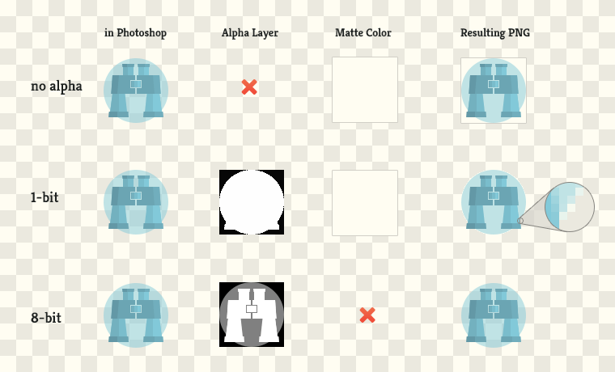
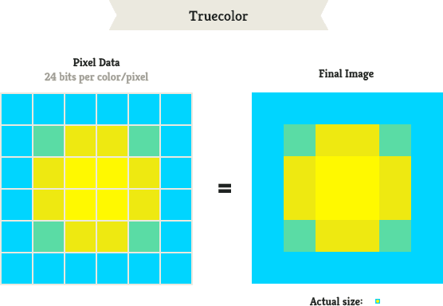

I’ve regularly recieved questions from my dev friends who were miffed at images and the plethora of formats. I’m also aware that some developers tell me this is what they hate - receiving a PSD with no instructions and having to wade through the overwhelming options of Photoshop. This guide is aimed at explaining the basics of image formats and giving you some simple rules that you can apply everyday when working with images for both the web and iOS. If you want to geek out, I’ve got some fun links at the bottom.1
There are two types of images you will encounter when coding - PNGs and JPGs. Between these two we will be able cover the gamut of any web or mobile app. JPGs are meant for photos. If you have a photo it should be a JPG format. This part is pretty simple. JPGs do not support transparency and are lossy, meaning that while saving the photo Photoshop the color information of some pixels will be approximated from their surrounding photos. This is what causes Artifacts, but more on that later.
PNGs are for graphics. They are lossless, meaning all of the color information for every pixel is retained. This is both good and bad - good because you are guaranteed to have crisp and clean graphics, but often will result in larger file sizes when you have complex images. If you have an icon or other interface element it should be a PNG. What do I mean by Complex? Complexity of an image can mean two things - a lot of colors (aka a large gamut) or intricate details/textures/gradients.
1-bit: either a pixel is a 100% opaque or 100% transparent (this is the only transparency GIFs support)
1-bit: either a pixel is a 100% opaque or 100% transparent (this is the only transparency GIFs support)

Don’t use GIFs, they are an old standard that has been replaced by PNG File > Save for Web | ctrl+shift+alt+s Except they have the ability to support animation, so they aren’t going anywhere, but for the average web app this isn’t applicable.